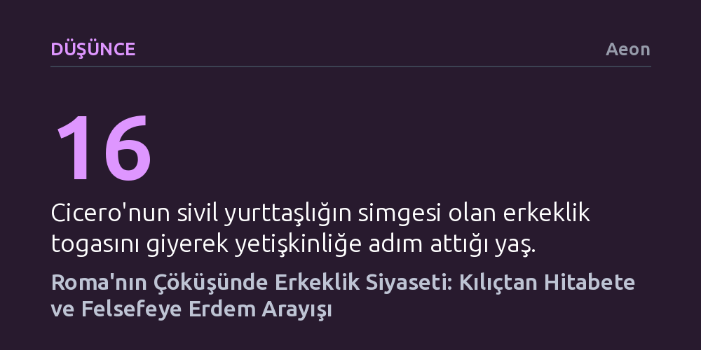

DUSUNCE · Aeon · 2026-10-17
Geç Roma Cumhuriyeti'nde erkeklik (virtus), yalnızca savaş meydanındaki cesaretle değil; hitabet, kılık kıyafet ve duygusal özdenetim üzerinden sergilenen kırılgan bir kamusal performanstı. Çöken cumhuriyette Cicero, kaba kuvvete karşı erkekliği felsefi erdem ve sivil dirençle yeniden tanımlamaya çalıştı.
Tarih boyunca erkeklik ve iktidar tanımlarının değişmez doğa yasaları değil; siyasi krizler, kamusal söylemler ve toplumsal rollerle sürekli yeniden inşa edilen yapay kurgular olduğunu gösterir.

Roma Cumhuriyeti'nin siyasi ve toplumsal zihninde erkeklik hiçbir zaman yalnızca biyolojik bir durum olarak görülmedi; kamusal alanda sürekli sınanan, sergilenmesi zorunlu bir üstünlük iddiasıydı. Erken cumhuriyet döneminde erkeklik anlamına gelen virtus kavramı, doğrudan savaştaki cesaret ve düşmanı alt etme gücüyle özdeşleştirilmişti. Tarihçi Sallustius gibi isimler, Roma'nın büyümesini savaş meydanlarında canını ortaya koyan geçmiş nesillerin sarsılmaz savaşçı niteliklerine bağlıyordu. Ancak imparatorluk genişledikçe ve cumhuriyet kurumları olgunlaştıkça, erkekliğin kanıtlanacağı yegane yer savaş meydanı olmaktan çıktı.
Bu dönüşümün en güçlü temsilcisi, kılıç kuşanmak yerine sözün gücüyle devleti yönetmeyi seçen Marcus Tullius Cicero'ydu. Henüz on altı yaşındayken askeri üniforma yerine sivil yurttaşlığın göstergesi olan yün togasını giyen Cicero, siyasi hayatı boyunca sivil başarıların askeri zaferlerden aşağı kalmadığını savundu. MÖ 63 yılındaki konsüllüğü sırasında devleti tehdit eden Catilina komplosunu tek bir damla kan dökmeden, yalnızca Senato'da yaptığı konuşmalarla bastırdığında, bunun togalı yurttaşların zaferi olduğunu haykırmıştı. Cicero'ya göre kitleleri ikna eden bir hatip, en az kanlı seferlerden zaferle dönen generaller kadar erkekçe ve cesur bir mücadele veriyordu.
Böylece Roma seçkinleri için erkeklik, fiziksel şiddet tekelinden çıkıp kamusal alanda yurttaşları etkileyebilme, devlete hizmet etme ve sivil sorumluluk üstlenme kapasitesine dönüştü. Forum ve Senato, savaş meydanının yerini alan yeni meşruiyet alanları haline geldi.
Sivil alanda erkeklik iddiasında bulunmak, beraberinde amansız bir kamusal denetimi getirdi. Roma Forumu'nda ya da mahkemelerde halkın karşısına çıkan bir hatibin yalnızca ne söylediği değil; nasıl durduğu, sesini nasıl kullandığı ve togasını nasıl giydiği de titizlikle incelenirdi. Dönemin retorik uzmanı Quintilianus'un belirttiği gibi, bir hatibin giyimi hem erkekçe hem de ölçülü olmalıydı; toganın sağ omuza nasıl atıldığından ayakkabıların bağlanışına kadar her ayrıntı ahlaki ciddiyeti yansıtırdı. Fazla özensizlik kaba bulunurken, aşırı süslenmek ise derhal kadınsılıkla veya züppelikle suçlanırdı.
Bu kamusal arenada siyasi rakipler birbirlerinin erkekliğine acımasızca saldırırdı. Dönemin hitabet el kitapları, genç siyasetçilere seslerini tiz çığlıklardan korumalarını, tiyatrocular gibi abartılı jestler yapmak yerine güreşçilerden ya da askeri talimlerden esinlenen vakur bir beden dili geliştirmelerini öğütlüyordu. Doğu Akdeniz'den gelen süslü ve aşırı cilalı konuşma üslubu sıklıkla yozlaşmış ve efemine ilan edilirken, Atina geleneğinin yalın ve dolaysız konuşma biçimi erkekçe dürüstlüğün simgesi sayılıyordu.
Fakat burada derin bir çelişki yatıyordu: Doğal ve içten olması gerektiği iddia edilen erkeklik, aslında baştan sona kurgulanmış, derslerle çalışılmış bir sahne performansıydı. Erkeklerin kadınlara, hür yurttaşların ise kölelere olan sözde doğal üstünlüğünü kanıtlama çabası, yapay kurallarla ezberlenen bir temsile dayanıyordu.
Julius Caesar ve Pompeius gibi ordu komutanlarının yükselişi, sivil hitabete ve tartışma kültürüne dayalı cumhuriyetçi sistemi temellerinden sarstı. Lejyonların gücünü arkasına alan generaller Senato'yu etkisizleştirdiğinde Cicero büyük bir umutsuzluğa kapıldı. Dostu Atticus'a yazdığı mektuplarda cumhuriyetin artık içi boş bir kabuktan ibaret olduğunu belirten hatip için siyaset sahnesi kararmıştı. MÖ 49-45 yılları arasındaki iç savaşın ardından Caesar'ın diktatörlüğünü ilan etmesiyle Forum sustu; özgür tartışmanın bittiği yerde Cicero'nun sivil erkeklik ideali de meşruiyet zeminini yitirdi.
Bu siyasi çöküşe aynı dönemde çok ağır bir kişisel kayıp eklendi: Cicero'nun kızı Tullia doğum yaptıktan kısa süre sonra hayatını kaybetti. Hayatındaki en büyük sığınak olan kızını yitiren Cicero, hem derin bir yasa gömüldü hem de siyaset sahnesinden dışlanmış olmanın getirdiği çaresizliği yaşadı. Bir mektubunda hissettiği derin acıyı evladını kaybeden bir annenin yasına benzetmesi, kamusal rolünü yitiren Romalı bir erkeğin yaşadığı güçsüzlük ve itibar kaybı duygusunu çarpıcı biçimde yansıtıyordu.
Cicero bu çifte felaketten kurtuluşu felsefede buldu. Kamusal kürsüleri elinden alınan büyük hatip, erkeklik ve erdem kavramını yeniden tanımlamaya girişti. Ona göre gerçek erdem, artık askeri fetihlerde veya alkışlanan siyasi nutuklarda değil; acıya, ölüme ve zorbalığa karşı gösterilen zihinsel dayanıklılıkta ve duygusal özdenetimde gizliydi. Felsefeyi Latinceye kazandırarak sivil erkekliğin en yüce biçiminin ahlaki ve zihinsel direnç olduğunu savundu.
Caesar'ın MÖ 44'te öldürülmesinin ardından Cicero, cumhuriyeti yeniden canlandırmak için son bir hamleyle siyaset sahnesine döndü. Caesar'ın mirasını devralmaya çalışan Mark Antonius'a karşı verdiği mücadelede, tarihe Filipikler olarak geçen ünlü nutuklarını irad etti. Cicero bu konuşmalarda Antonius'u bedensel arzularının kölesi, ölçüsüz, zevk düşkünü ve iradesiz bir figür olarak resmetti. Hasmını küçük düşürmek için dönemin tüm erkeklik önyargılarını ve cinsel kodlarını acımasızca silah olarak kullandı.
Ne var ki kelimelerin gücü, lejyonların demir yumruğunu durdurmaya yetmedi. Antonius ve Octavianus'un kurduğu ittifak kontrolü ele geçirdi ve Cicero'nun ölüm fermanı imzalandı. Askerler kendisini yakaladığında başını dimdik uzatarak cellatlarını karşılayan Cicero, son anında bile kendi vazettiği cesaret ve vakar idealine sadık kalarak hayatını kaybetti.
Cicero'nun trajik sonu kaba askeri gücün zaferini ilan etmiş görünse de, onun sivil erdem, kendini denetleme ve hitabet üzerine kurduğu erkeklik ideali yüzyıllar boyunca Avrupa düşüncesini şekillendirmeye devam etti. Roma'nın çöküşü, erkekliğin değişmez bir doğa yasası değil; iktidar, kriz ve toplumsal beklentiler karşısında sürekli biçim değiştiren kırılgan bir uzlaşma olduğunu tarihe not düştü.